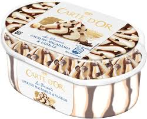

informatie over ijs en sorbet
IJs is koud, ongeveer 0 graden Celsius. Water bevriest namelijk bij die temperatuur. Je hebt verschillende soorten ijs:
- Waterijs: wordt gemaakt van water, suiker en een smaakje.
- Sorbetijs: wordt gemaakt van water, suiker en vruchtenmoes.
- Roomijs: wordt van melk gemaakt met suiker en een smaakje.
IJs kun je maken op verschillende manieren:
- In een ijsmachine.
- Gewoon in de vriezer.
In een ijsmachine worden de ingrediënten constant geroerd terwijl ze bevriezen. Hierdoor krijg je geen grote ijskristallen waardoor het ijs lekkerder van smaak wordt.